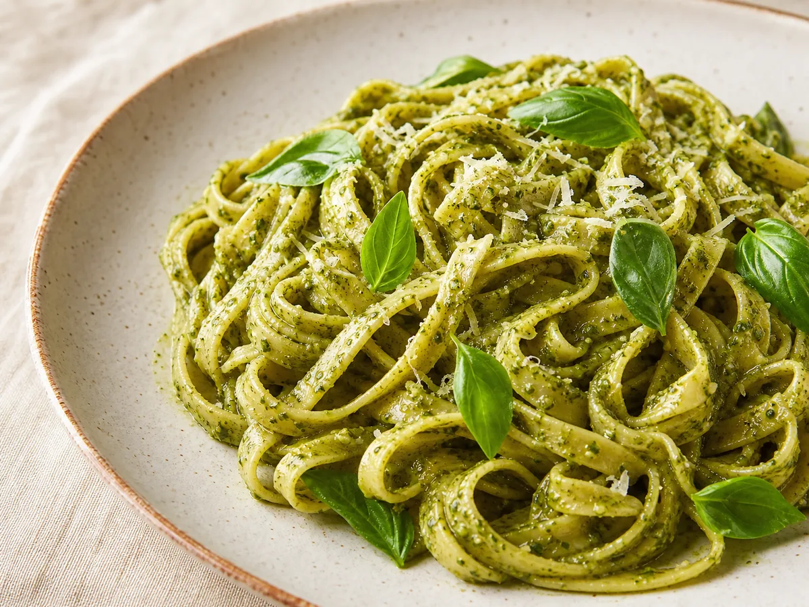
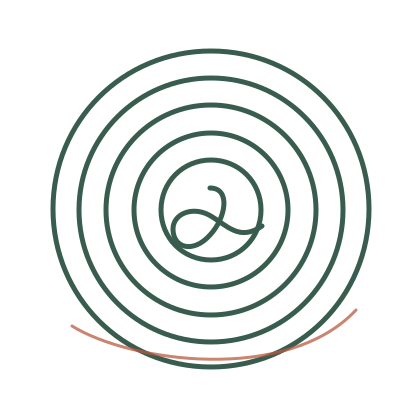
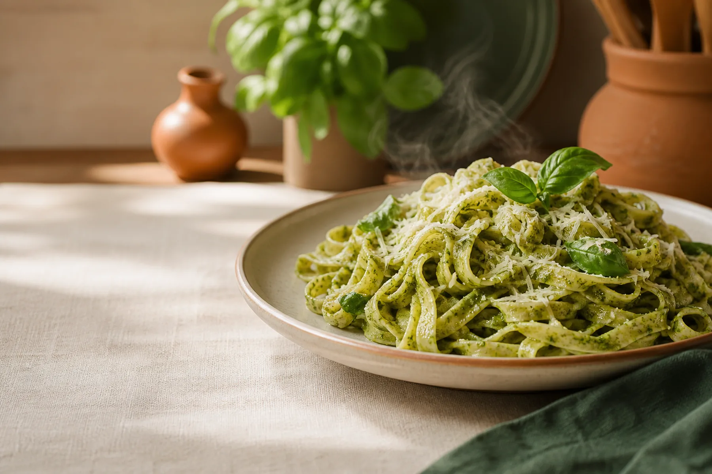
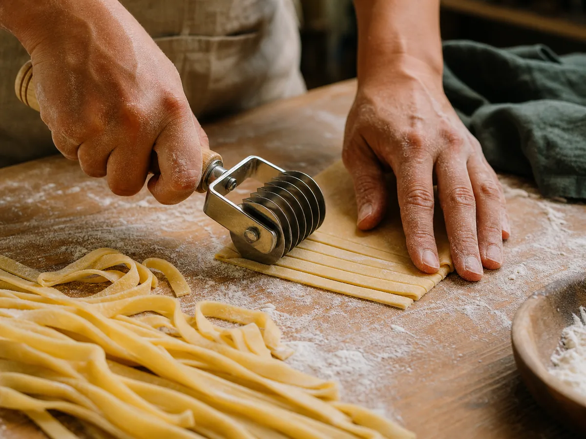
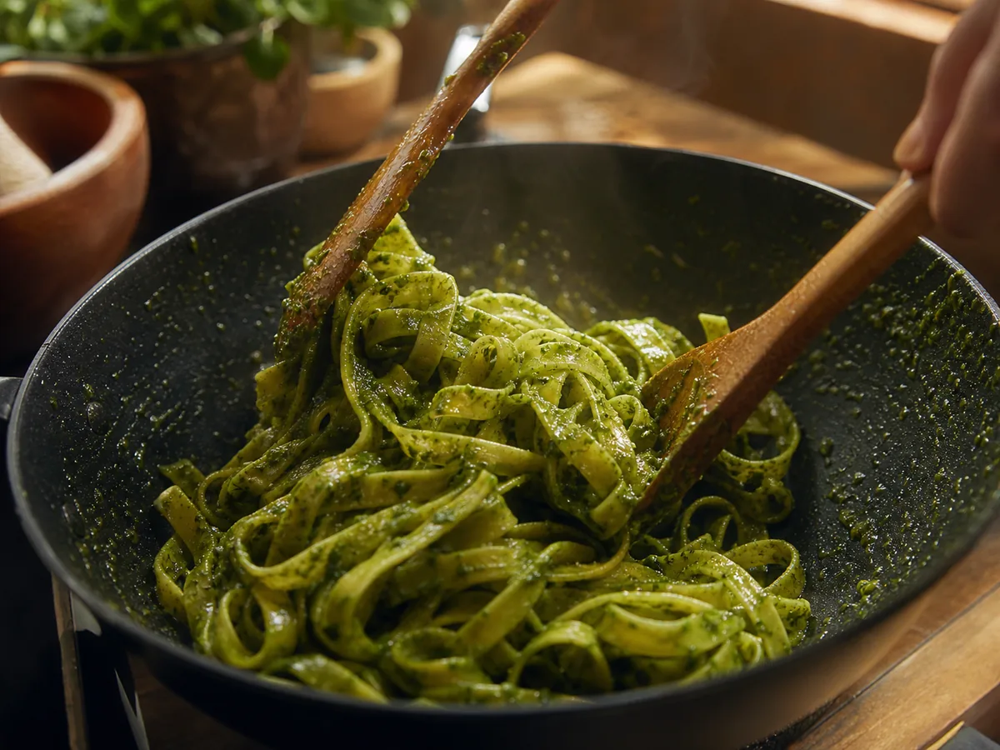
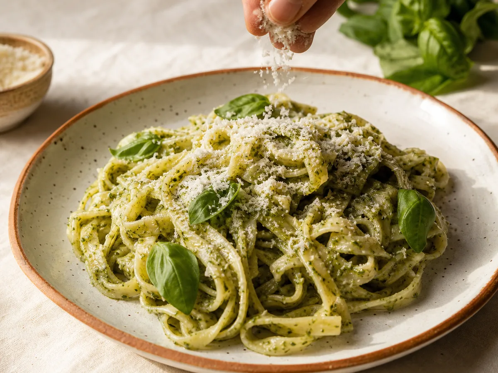
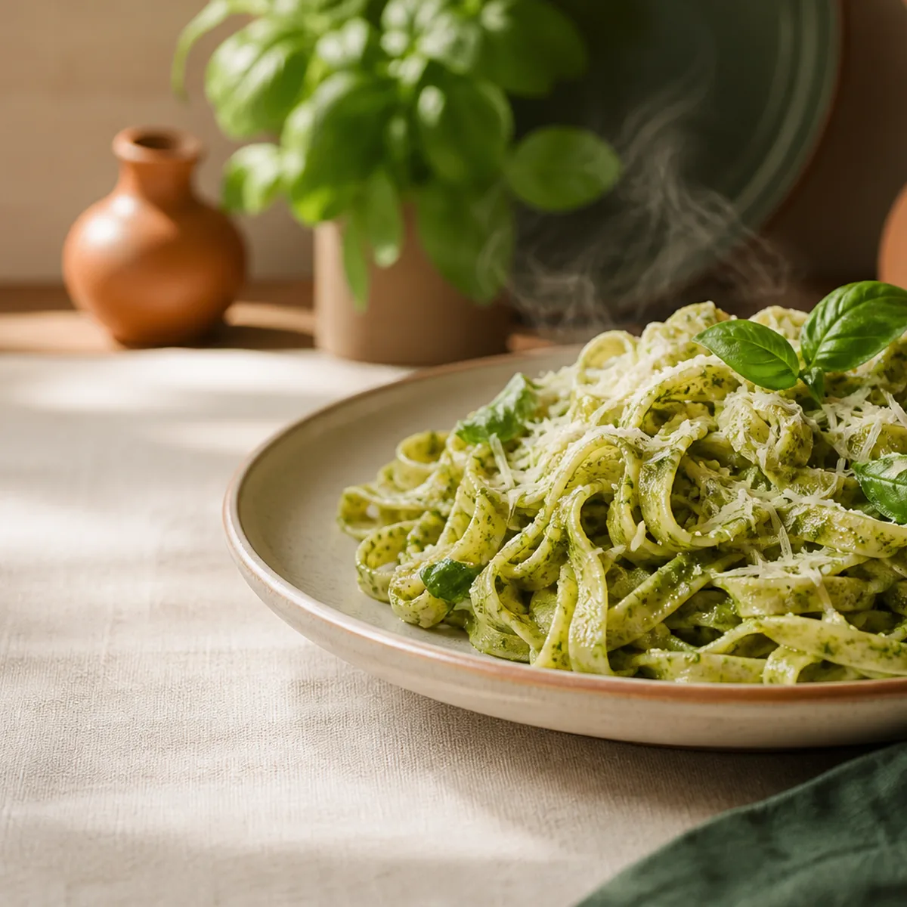
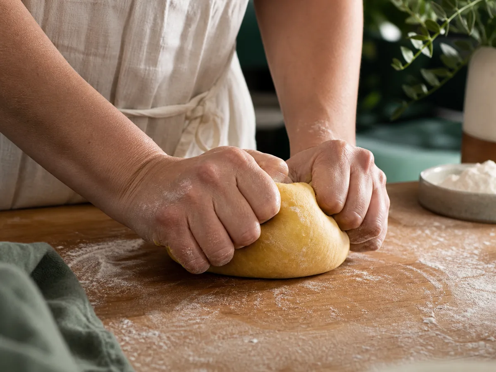
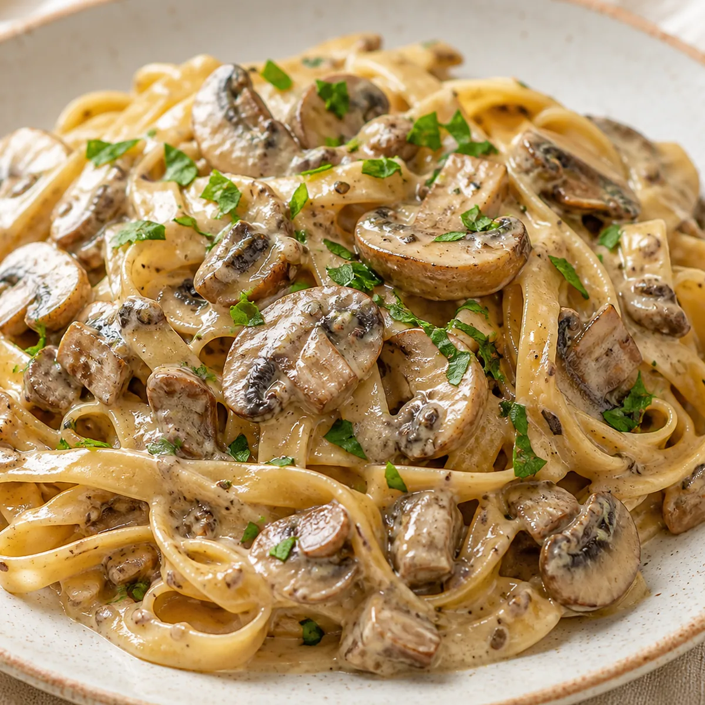

01
$5.990Fettuccine al pesto
Pasta artesanal con pesto y el aroma fresco de la albahaca.
Pedir fettuccine al pesto
Pastas artesanales en Talcahuano
Sabor casero con historia
Almuerzos preparados con dedicación, ingredientes llenos de sabor y ese cariño que se nota desde el primer bocado.
Preparado artesanalmente

El oficio detrás del plato
Cada plato recorre un proceso simple y cuidadoso, desde la masa hasta el toque final.




Momentos de cocina






Simple y directo
Fettuccine artesanal o bowl fresco.
Escoge masa, salsa o proteína.
Coordinamos tu pedido y reparto.
Para disfrutar más
Reserva el día anterior y paga mediante transferencia para obtener un 5% de descuento.
En tu quinto pedido recibe 50% de descuento en un plato a elección.
Condiciones sujetas a confirmación por WhatsApp.
De nuestra cocina a tu mesa
Coordinamos tus almuerzos con anticipación para que lleguen listos para disfrutar.
Reparto gratisDesde 2 unidades.
$1.000 de repartoPara un solo almuerzo.
Pedido anticipadoCoordínalo con tiempo.
Cobertura y disponibilidad sujetas a confirmación por WhatsApp.
Raíces de Talcahuano
El nombre se inspira, con respeto, en la antigua mina “El Portón” y en la historia del Cerro David Fuentes, parte de la memoria local de Talcahuano.
También reconoce la huella de David Fuentes Gavilán y su aporte histórico a la ciudad.